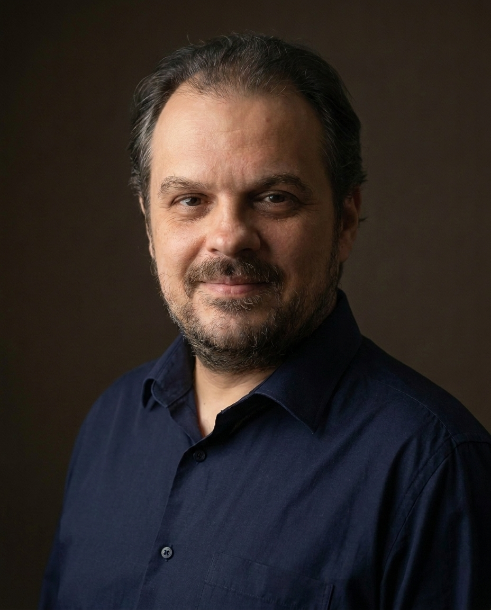

Руковожу внедрением ИИ (AI-трансформацией) в процессах продаж, исследований и привлечения и довожу его до работающей системы: от выбора модели и железа до интеграции с CRM и метрик. На моём контуре бриф по компании стоит 27,65 ₽ прямых расходов и ~55 минут вместо 4–8 дней аналитика, 93% вызовов моделей исполняются локально — данные остаются внутри периметра. Продаю такие решения в B2B и знаю цикл сложной IT-сделки изнутри.
Своя AI- и серверная платформа. Держу собственную инфраструктуру на Proxmox: виртуальные машины и контейнеры, локальные модели на своих GPU через vLLM и OpenAI-совместимый API, мониторинг, сети, секреты, бэкапы. Сдаю свободные GPU-мощности в аренду, поэтому понимаю GPU-облако с двух сторон — как потребитель и как хостер.
Исследования и автоматизация на ИИ. Построил исследовательский движок на локальных моделях: около 90 исследований и разборы почти 40 крупных компаний и групп. Собственные AI-агенты для SEO, рекламы, текстов, лендингов, презентаций и исследований.
B2B-продажи сложных IT-услуг. Десять лет строил контур привлечения IT-аутстаффинг-холдинга: компании из 171 страны, до договорных стадий дошли Microsoft, NVIDIA, Deloitte, Huawei, Lenovo, 258 компаний доведены до производства, бюджет контура — до 25 млн ₽/год. Считаю экономику решения так же, как экономику канала: отключаю то, что не окупается.

Руковожу внедрением ИИ в собственных бизнес-процессах: спроектировал и эксплуатирую инфраструктуру, на которой работают исследовательские пайплайны, B2B-аналитика, генерация контента и сдача GPU в аренду. Работы веду сам и через собственных AI-агентов: они ведут часть рутинной эксплуатации по ранбукам, решения и приёмка — на мне.
Что это даёт: гипотеза проверяется за часы и почти без бюджета, данные клиента не уходят в чужое облако, а стоимость одной операции измеряется копейками, а не счётом подрядчика.
Построил и десять лет развивал систему привлечения для международного B2B-направления — продажи IT-специалистов и команд компаниям по всему миру: сбор и обогащение данных, собственная почтовая инфраструктура, каденции, квалификация в CRM, передача прогретых лидов в продажи.
Команда: шесть специалистов за период, 3–4 одновременно, оформление через подряд и ИП. Нанимал, обучал, ставил KPI, принимал работу. Отвечал за pipeline и цену результата перед C-level.
Международный проект: каталог событий городов мира, собираемый из социальных сетей, клиенты в России, США, Канаде, Черногории и Израиле, биллинг через PayPal.
Отвечал за трафик и его монетизацию: лиды и звонки, продаваемые застройщикам, продуктовое SEO на миллионах страниц, медийная монетизация.
Руководил службой технической поддержки хостинг-провайдера: команда из 10 инженеров, работа 24/7 по сменам, тысячи обращений в месяц в рамках SLA.
Орловский производитель промышленного оборудования вышел через сайт на Москву и поставлял в 52 региона России: структура и каталог, семантика, тексты, вывод в поиск, поддержка.